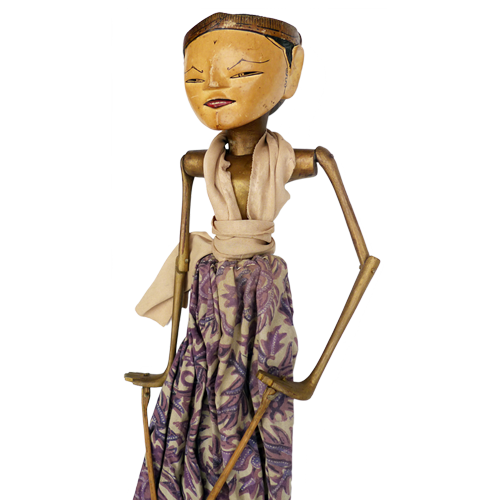
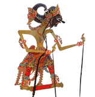
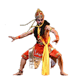

Wahyangna adalah situs yang menyediakan informasi tentang wayang,
Wayang, Berdasarkan bahan nya dibedakan menjadi tiga jenis:

Wayang Kulit

Wayang Kayu

Wayang Manusia
Wayang Kayu(Golek)
Wayang Golek adalah suatu seni tradisional sunda pertunjukan wayang yang terbuat dari boneka kayu, yang terutama sangat populer di wilayah Tanah Pasundan, Daerah penyebarannya terbentang luas dari Cirebon di sebelah timur sampai wilayah Banten di sebelah barat, bahkan di daerah Jawa Tengah yang berbatasan dengan Jawa Barat sering pula dipertunjukkan pergelaran Wayang Golek..
Wayang Kulit
Wayang Kulit merupakan warisan budaya Indonesia yang keberadaannya paling menonjol diantara karya budaya lain yang ada di Indonesia. Sebuah kesenian adiluhung dengan eksistensi melampaui lintas zaman dan benua.
Istilah Wayang sendiri berangkat dengan beberapa versi. Disebutkan bahwa Wayang berasal dari sebuah kalimat yang berbunyi “Ma Hyang”, artinya berjalan menuju yang maha tinggi (dimaknai sebagai roh, Tuhan, ataupun Dewa).
Wayang Manusia
Wayang orang disebut juga dengan istilah wayang wong (bahasa Jawa) adalah wayang yang dimainkan dengan menggunakan orang sebagai tokoh dalam cerita wayang tersebut. Wayang orang diciptakan oleh Sultan Hamangkurat I pada tahun 1731.